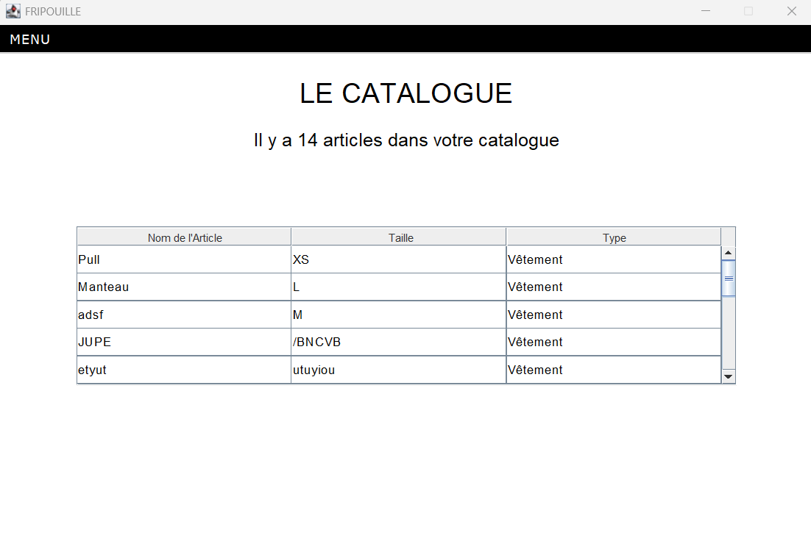
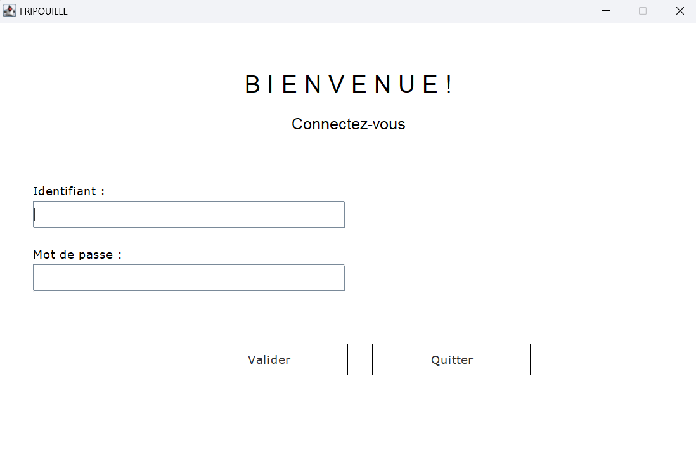

Description du projet
Fripouille est un projet qui, dans la continuité d'Epi'Solidaire, prend place au sein de Getcet sur mer.
Il s'agit d'une application web dans laquelle des habitants peuvent donner des vêtements qu'ils
ne portent plus, afin qu'ils soient mis en vente par la mairie auprès des autres habitants.
Sur ce projet, j'ai à nouveau été en binôme et toujours en suivant la structure MVC (Modèle Vue Contrôleur),
j'ai dû implémenter cette application. Afin de travailler avec ma binôme, nous nous sommes
réparties les tâches avec Trello. Puis pour coder à distance, nous avons fait appel aux fonctionnalités de github pour
travailler sur nos fichiers sans avoir de décalage quant aux modifications apportées sur l'application. Toutes les informations nécessaires nous ont été fournies dans un cahier des charges pour nous guider,
sinon, nous avions le champ libre au niveau de l'esthétique du site.
Les rôles de maire, secrétaire et bénévoles sont inscrits sur l'application et ont chacun accès à des fonctionnalités différentes.
- Le Maire peut consulter des catalogues et les statistiques des ventes proposées.
- Le ou la secrétaire est en charge de la création de nouvelles ventes et peut consulter l'historiques des catalogues de ventes.
- Enfin, le bénévole se charge d'enregistrer des articles à vendre et peut également consulter le catalogue.
Les rôles de maire, secrétaire et bénévoles sont inscrits sur l'application et ont chacun accès à des fonctionnalités différentes.
- Le Maire peut consulter des catalogues et les statistiques des ventes proposées.
- Le ou la secrétaire est en charge de la création de nouvelles ventes et peut consulter l'historiques des catalogues de ventes.
- Enfin, le bénévole se charge d'enregistrer des articles à vendre et peut également consulter le catalogue.
Bilan et autocritique
Sur ce projet, il y avait la notion de test unitaire qu'on a dû explorer en binôme en plus du MVC en Java. Nous avons négligé ces test qui auraient pu nous faire gagner du temps.
Malgré cela, il s'agit de mon second projet en deuxième année de BTS et j'ai mieux compris l'architecture MVC.